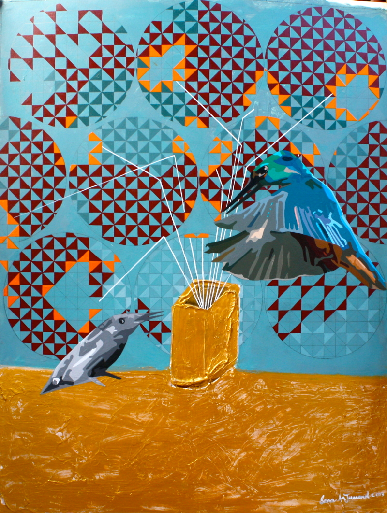

August 26, 2013
Finest art can be created in borderline solitude
Artist Sana Arjumand exhibits her new body of work at Canvas Gallery from tomorrow
© Sana Arjumand
The finest art can be created when you are one with yourself, in borderline solitude, Sana Arjumand told me in an interview.
The Islamabad-based artist is in Karachi for her solo exhibition, which opens Tuesday (tomorrow) at the Canvas Gallery.
The show’s title ‘Felicity’ signifies Sana’s focus on abundant happiness. “Whatever you focus on grows. My new body of work is about ascension and reaching light, walking out of darkness and on the path of realising true human potential.”
The driving force behind her work is the rush of creating something new. “Life itself urges me to paint. I think the method of processing information that I have adopted has played a major role in my life for creating, discovering and experimenting.”
Her art has helped her understand herself and to see the “mysteries of existence up close”. Through her works she intends to “stimulate the viewers visually, intellectually and spiritually”.
Sana puts a high priority on originality. “It’s important not to be a sheep in a herd because only then will you be heard. A different voice always stands out. This shouldn’t be a conscious effort; one must let nature guide them. Everybody has their own place and purpose in the universe.”
She has been painting since she “found my fingers” but she decided to become an artist when she was 17. “I remember my first real piece was made in the company of RM Naeem, who later was also my professor in college. It felt like quite an achievement. I still remember it had elephants carrying fruits.”
Naeem is the assistant professor of fine arts at the National College of Arts in Lahore, where Sana got her Bachelor of Fine Arts and later taught for a year.
Her father, who is an art collector, introduced her to the art world and always encouraged her to pursue her goals. She receives the same amount of support from her husband.
For her the most enjoyable thing about art is “to see your own reflection in your expression; to observe this reflection is to understand the meaning of existence, which leads you to discover light”. The recurring message she tries to express through her works is of divinity and ascension.
Sana wants her work to represent “the grandeur and potential the creator has bestowed on man, the divine purpose man was built for and the purity he can achieve rather than corruption”.
She believes that in the present day, art has become a bridge to connect with each other and share oneself with the world. “An art piece allows you to look through a window into another person’s realm. The purpose of art is related to the purpose of existence. Art brings to realisation from the unknown that which we forget. The unknown is where the answer of existence is.”
She admires the art of Sadequain, Frida Kahlo, Leonardo da Vinci and Otto Dix, as well as the new works of Naeem, Meher Afroz, Khalil Chishtee, Naiza Khan, Chuck Close, John Currin, Ólafur Elíasson, Glenn Brown and Wilhelm Sasnal. If she could receive training from the artists of yore, she would choose Salvador Dalí, René Magritte, Da Vinci and Michelangelo.
Seeking is what drives her to continue producing art. That’s her advice for the aspiring artists as well. “They should never cease to seek.” It’s important for her that people feel art rather than trying to understand it.
Besides Karachi, Lahore and Islamabad, Sana has exhibited her works in New York, London, Dubai, Abu Dhabi, Hong Kong, Jordan and Korea. Her art show at the Canvas Gallery will run until September 5.
First published in The News International